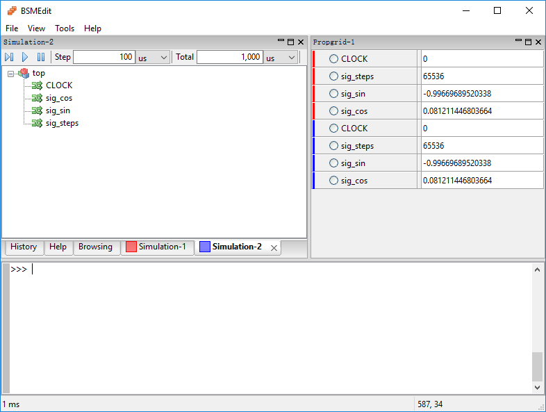

1 What is bsmedit
bsmedit is a tool to control C++/SystemC simulation. It is open source, and cross platform. Long time ago, when I first used the Systemc library to simulate some communication algorithms, I was quickly bored with the following debugging procedure:
- update the source code;
- re-compile the program;
- check the results.
And occasionally, I would need to add some debugging code. For example, printing some value (e.g., printf) to the terminal or dumping the data to a file, so that I can use another tools (e.g., Matlab) to visualize and analyze it (e.g., plot).
bsmedit aims to simplify this procedure. With bsmedit, we can
- control the simulation
- monitor the signals in real-time
- plot/dump the signals
- ......
2 Get started
To use bsmedit, the first step is to build a simulation. In the following example, we will make a toy SystemC simulation that outputs a synchronized sin and cos waveforms.
- Create a simulation project. You can use your preferred platform and compiler. In this demo, we will use Visual C++ express as an example.
Add SystemC support to your project. To make the simulation work with bsmedit, you need a modified SystemC, which can be got here.
Please refer to the file INSTALL in the SystemC package if you are not familiar with adding SystemC support to your project.- Implement the simulation.
Create a top level SystemC module
top, wheretop.hmay look like#ifndef TOP_H_ #define TOP_H_ #include "systemc.h" class top : public sc_module { public: SC_HAS_PROCESS(top); top(sc_module_name name_): sc_module(name_) ,clock("CLOCK", 10, SC_NS, 0.5, 0.0, SC_NS) ,sig_sin("sig_sin") ,sig_cos("sig_cos") ,sig_steps("sig_steps", 256) ,m_phase(0.0) { SC_METHOD(Action); sensitive_pos<<clock; } virtual ~top(); private: void Action(); private: double m_phase; //signal sc_clock clock; sc_signal<double> sig_sin; sc_signal<double> sig_cos; sc_signal<int> sig_steps; }; #endif // #ifndef TOP_H_
The top module is derived from
sc_module. It defines several signals used in the module- clock: the module is triggered by the positive edge of the clock, whose period is $10ns$ with 50% duty cycle. One thing to notice is that the signal clock is given a name
CLOCK. bsmedit will use this name to have access to this signal. At shown in the example, the name of the signal (i.e., CLOCK) may not be same as the variable name (i.e., clock), although in practice they are often same for convenience. - sig_sin: the signal for the sine waveform, whose name is
sig_sin. - sig_cos: the signal for the cos waveform, whose name is
sig_cos. - sig_steps: the phase step for each clock, which is increased by $\frac{\pi}{\textrm{sig_steps}}$. The phase is initialized to be zero.
The module also defines a process method (i.e.,
Action). It is triggered at rising edge (also called positive edge), where all calculations are conducted.- clock: the module is triggered by the positive edge of the clock, whose period is $10ns$ with 50% duty cycle. One thing to notice is that the signal clock is given a name
The
top.cppmay look like#include <math.h> #include "top.h" #ifndef M_PI #define M_PI 3.14159265358979323846 #endif top::~top() { } void top::Action() { sig_sin.write(sin(m_phase)); sig_cos.write(cos(m_phase)); int steps = sig_steps.read(); if(steps < 256) { steps = 256; sig_steps.write(256); } m_phase = m_phase + M_PI / steps; if(m_phase > 2 * M_PI) m_phase -= 2 * M_PI; }
In the process method (
Action), we simply update the sin/cos signals based on the current phase. Then, update the phase for the next step. In this demo, the maximum step is assumed to be $\frac{\pi}{256}$, which is kind of arbitrary.The
mainfunction may look like#include "systemc.h" #include "bsm.h" #include "top.h" // define the interfaces to bsmedit BSMEDIT_IMPLEMENT_MODULE(top,"top");
Besides the SystemC library, it also needs to include the
bsm.h/cppin the project. They define some useful interfaces to work with bsmedit- BSMEDIT_IMPLEMENT_MODULE(top,"top") creates the top level module with name 'top'.
We will discuss the macro in detail in the following sections.
The demo project can be download here.
- Compile the project to get simulation (e.g.,
start.dll)
2.1 Open with bsmedit
bsmedit can be download here. Besides bsmedit, you may also need
bsmedit uses wxPython for the GUI, and currently its stable release only supports Python 2.x. It's the main reason currently bsmedit only supports python 2.x.
Click bsmedit.py to start bsmedit, and create the simulation1 by
It will show a open file dialog. In the open file dialog, select the start.dll from the above step. bsmedit will automatically load the simulation.
The main window consists of 4 sections:
Simulation control toolbar. The window in red rectangle
1shows the simulation control toolbar. From left to right:- step: run the simulation in one step. You can arbitrarily define the duration of simulation step as we will show shortly, and it is not related to the delta cycle concept in SystemC simulation.
- run: run the simulation until you pause it or the preset total simulation duration is reached.
- pause: pause the simulation.
- step duration: the duration of each simulation step. At the end of each simulation step, bsmedit will retrieve the data from the simulation and update the GUI (e.g., the current time-stamp). when run the simulation, bsmedit may adjust the step duration so that the simulation does not generate to many updating events.
- step unit: the time unit of each simulation step
- total duration: the total simulation duration. bsmedit will pause the simulation if the current simulation time passes the total simulation time.
-1means running the simulation infinitely. - total unit: the time unit of the total simulation duration.
Simulation objects2. The window in red rectangle
2lists all theobjectsdefined in the simulation. As shown in previous steps, the simulation has one top module (i.e.,top) and it has 4 signals:CLOCK,sig_cos,sig_sin, andsig_steps. The tree hierarchy represents their structure in the simulation.- Console window. The window in red rectangle
3is the console window. You can execute commands and output will be shown in the same window. We will show more details later. - Simulation status. The window in red rectangle
4shows the status (e.g., the current simulation time-stamp).
To run the simulation, click the step or run button. The simulation will proceed until you pause it or the total simulation duration is reached. The current simulation time will be shown in the status bar.
It is not very interesting if bsmedit can only control the simulation running. bsmedit also allows you to monitor the signal values in real-time. For example, select the signal(s) to be monitored, and right click on it
bsmedit will create a propgrid window and add the selected signals to it.
Click the run button to start the simulation. The values of the signal will be automatically updated.
You can also modify the signal values, for example, by typing the following commands in the console window (no need to worry about the commands now, we will discuss them in detail in the following sections)
>>> # get the simulation handle >>> s = simulation(1) >>> # set the number of steps >>> s['top.sig_steps'] = 8192
The first command gets the handle of the simulation. Then, the second command sets the value of signal top.sig_steps to 8192.
You can also plot the trace to see the signal trend,
>>> # trace the cos waveform to a buffer with size 4096 >>> s.trace_buf('top.sig_cos', 4096) >>> # trace the sine waveform to a buffer with size 4096 too >>> s.trace_buf('top.sig_sin', 4096) >>> # plot the trace >>> plot_trace('top.sig_cos', 'top.sig_sin', False) >>> xlim([-1,1]) >>> ylim([-1,1])
The first command tells bsmedit to start tracing the signal top.sig_cos; and the buffer length is 4096. In other words, its latest 4096 values will be traced to a numpy array. Similarly, the second command traces the signal top.sig_sin. The third command creates a figure to plot top.sig_cos as $x$ axis value and top.sig_sin as $y$ axis. The last two lines set the limits of $x$ axis and $y$ axis, respectively. The created figure looks like
It does not really show anything visible. However, it is not surprising, since we just create the buffer and it has not be filled with anything yet. When you run the simulation, the buffer will be filled and the plot will be updated accordingly
You can following the above steps to start the simulation and monitor the signals each time. However, it is too tedious to repeat each step again and again. In bsmedit, you can write a python script to do all the steps. The script may look like
from bsm.pysim import * # create a simulation s = simulation(None, './examples/start.dll') # set the simulation parameters: step = 100us, run infinitely s.set_parameter('100us', '-1us') # create the propgrid window and monitor the signals s.monitor('top.CLOCK') p = s.monitor('top.sig_steps') p.SetChoice([256,1024,2048, 8192, 16384]) p.SetControlStyle('combobox') s.monitor('top.sig_sin') s.monitor('top.sig_cos') s.write({'top.sig_steps': 2**16}) # dump the signal value to a numpy array s.trace_buf('top.sig_cos', 2**14) s.trace_buf('top.sig_sin', 2**14) plot_trace('top.sig_cos', 'top.sig_sin', False) xlim([-1,1]) ylim([-1,1]) grid(ls='dotted') s.run(to='1000us') s.wait_until_simulation_paused()
Save the script to a file (e.g., start.py). Then, it can be open the script in bsmedit

And it will look like the one shown in the following image. Click the  button to run the script
button to run the script
bsmedit will automatically load the simulation, create a propgrid window, monitor the signals, and create a figure to plot the signals.

3 How it works
bsmedit was initially written in C++. The previous version can be found here. It looks like an ideal choice since the simulation is written in C/C++/SystemC. It supports multiple platforms (e.g., windows, linux), whose GUI is based on wxWidget. It is highly extensible thanks to the plugin system. Actually most functions as you seen above are implemented with the plugin system. For example, one plugin is used to control the simulation (e.g., start, pause, stop, resume), which also supports breakpoints (e.g., pause the simulation when some conditions are satisfied; thus, you can check the status of your algorithm at that time.). One plugin is to plot the data captured from the simulation, which mimics some features in Matlab plot function. With that plugin, you can visualize the data in real-time and check its trend dynamically. One plugin adds some basic DSP functions (e.g., max, min, median, addition, subtraction, multiplication (dot product), square, square root, log/exp, sin/cos, acos/asin, tan, FFT etc.). It also had a console window so that you can type python command to execute (e.g., to control the simulation)...
Following this way, we could build bsmedit block by block. At that time, I though it would work. However, such method has some significant drawbacks. One big problem is that we need to re-inverting many many wheels. For example, after implement some functions, bsmedit also needs to wrap all these functions in python, so that you can call it in python script or in the console window. No need to say how tedious and error-prone such process is. How about if you want to add a DSP function that does not exist in bsmedit (e.g., a moving average)? Basically, you will have to create a plugin project following the template, and write code to implement the processing.
We try hard to make the interface as simple as possible; but it still requires some significant effort to make such plugin work. Furthermore, how about adding some features to the plot library? It will be a real nightmare to go through all the code to find the right position to add some additional code...
To solve these issues, from version 3, bsmedit is totally rewritten with python (wxPython for GUI). It does not mean you need to write your simulation in python. The simulation is still written in C/C++/SystemC, and bsmedit will load and run the simulation as usual. As it is in python, all functions can be directly called by your python script and no need to wrap the interfaces any more. No need to provide a custom plot library, since you can just use the existing python libraries (e.g., matplotlib). No need to write many basic DSP function, which can be easily fulfilled by calling function in numpy or scipy...
3.1 Console window
In version 3, the python console window is replaced with a 'native' interactive interpreter (wx.py.shell). It allows you to run any python command. Since everything is in python (except the simulation itself), there is no need to write the wrap function any more.
It is not fun to remember all the commands. When typing a '.', bsmedit will show an auto-complete list for you to select from, if there is any
Similarly, it will also show the calltips of a function if possible when it sees '('
And you can always use the help command to get the doc of a command, for example
>>> help run Help on function run in module bsm.pysim: run(*args, **kwargs) run(to=None, more=None) keep running the simulation The simulation is executed step by step. After each step, the simulation 'server' will notify the 'client' to update the GUI.
It also supports executing external command. The external command should be prepended by !. For example, to list the contents in the current folder by calling 'ls' command (see here for windows system)
>>> !ls
You can also pass arguments to the external command
>>> !ls -l
By default, when executing the external command, bsmedit will wait for it to finish, then show its output in the console window. Command can also be executed in background by appending a "&". For example, the following command will open a gvim window and return (without "&", it will not return until the gvim window is closed)
>>> !gvim &
You can add an alias to an external command to save some typing. For example, the following command will add an alias "ll"
>>> alias ll ls -l
where the first parameter is the alias name (e.g., "ll"), and the remaining parameters are the destination (e.g. "ls -l").
Now, when the console sees input "ll", it will automatically replace it with "!ls -l", and execute it. If an alias definition does not include a destination, bsmedit will delete the alias if exists. For example, the following code will delete the alias ll
>>> alias ll
There are some pre-defined commands (by wx.py.shell), which are frequently used. Thus, you still can used it even if these external commands are not installed.
>>> cd DIR # go the DIR folder >>> pwd # show the current working directory >>> ls # list the current working directory >>> clear # clear the console window
It is also able to run the command silently. In other words, to execute the command without showing any output in the console window.
>>> # define a function foo >>> def foo(): ... print 'foo' ... return 42 ... >>> # call a function with output >>> a = foo() foo >>> # call a function silently >>> a = foo(); >>>
One major constraint of version 3 is that it executes the command in the main GUI thread. Thus, if a dead loop is feed into the interpreter, it will never return and can not be interrupted, for example:
while True: pass
One reason we do not execute the command in a separate process or thread is that some command may create GUI window. If the GUI window is created in separate process/thread, it will potentially cause many problems and significantly increase the complexity to handle the GUI window. However, in bsmedit, most time consuming task should be the simulation itself, not the command or processing. Thus, the console command should not occupy too much time to block the GUI updating.
Another concern is that we may totally separate the simulation control and GUI, such that you can use the simulation control function with any other interactive shell.
3.2 Figure
The interactive interpreter can run any python command, which greatly simplifies bsmedit. For example, in version 3, the plot library is discarded. Instead, you can use matplotlib to visualize the data. By default, all the functions defined in "matplotlib.pyplot" are pre-loaded, so you can call them directly in the console window. The detailed description can be found here. To create a new figure and plot a straight line
>>> figure(); >>> plot(range(100))
and the figure will look like
Like Matlab, you can add label, legend, and grid
>>> xlabel('x') >>> ylabel('y') >>> grid(ls='dotted') >>> legend(['line1'], loc='best')
The figure window has two sections: toolbar and plot, as illustrated in the following diagram
The buttons on the toolbar are (from left to right)
- home: it will bring the plot to the initial status (e.g., zoom and position)
- back: go to the previous status if available
- forward: go to the next status if available
- move: move the plot with the mouse
- zoom: zoom in the plot by clicking, moving and release mouse, or with the mouse wheel. Double click on the plot will bring the plot to the original view.
datatip: add datatip to the curve.
When Click on a datatip, it will be activated and its background will be in orange. In this case, you can drag the datatip around to align it in different position.
- save: export the plot (without the toolbar section) to a file (e.g., with format eps, ps, pgf, png, pdf, raw, rgba, svg, svga)
- copy: copy the plot (not the toolbar section) to clipboard
The plot function will add the curve to the active figure window. Generally, the active figure window is the latest activated figure window. For example, you can click on a figure window to make it active. And it will keep active until you click on another figure window or create a new one. If you are not sure about the active figure window, you may click on it before calling any plot functions. Or, the following command will activate the figure window with number 1 (its window name may look like 'Figure 1')
>>> figure(1)
You can also get the handle of the current figure with
>>> # get a reference to the current figure >>> gcf() >>> # get the current axes on the current figure >>> gca()
Refer to the Matplotlib doc for more details.
3.3 Simulation
One problem in version 2 is that the SystemC simulation runs in a thread, and it may crash (e.g., when the simulation exits), which may in turn crashes bsmedit. In version 3, the simulation runs in a separate process, which receives command from the main process (e.g., interactive interpreter), executes it and sends the response back. In this way, the simulation can gracefully exit without affecting the main process.
As you have seen above, bsmedit defines functions to control the simulation
Create a simulation.
s = simulation(num=None, filename=None, silent=False, create=True, activate=False)
where
argument description num the simulation id. If a simulation with numis found, its handler will be returnedfilename the simulation path silent - False: open a file dialog to select a simulation if
filenameis not given - True: do not show a file dialog
create create a simulation if can not find a simulation activate activate the simulation window if it is True If the function is executed successfully, it will return the handler
sto the simulation, which can be used to control the simulation or have access to its objects. For example# create a simulation and load 'mysimulation.dll' s = simulation(filename='./mysimulation.dll') # return the handler of the simulation #1 if it is available s = simulation(1)
- False: open a file dialog to select a simulation if
Load the simulation. The syntax is
s.load(filename)
where the parameter
filenameis the path to the simulation. If a simulation has already been loaded,loadwill unload it first.You can also tell bsmedit to open a file-dialog to select the simulation by calling the following function
s.load_interactive()
Set simulation parameters.
s.set_parameter(step=None, total=None, more=False)
argument description step the time duration of each step, e.g., " 100us". The pre-defined time units includefs(femtosecond),ps(picosecond),ns(nanosecond),us(microsecond),ms(millisecond), ands(second).total the total simulation duration. more if moreisFalse,totalparameter has its usual meaning. In this case,-1means to run infinitely; otherwise,totalmeans the additional simulation duration from the current simulation time.For example
# set the step to be 1000us, and run infinitely s.set_parameter(step='1000us', total='-1') # set the step to be 1000. Here unit is not given, so the current one will be used. The default unit is 'ns' s.set_parameter(step='1000', total='-1') # When 'run' the simulation, it will stop at 100ms s.set_parameter(total='100ms') # When 'run' the simulation, it will stop at 100ms from the current simulation time-stamp s.set_parameter(total='100ms', more=True)
Run the simulation. There are several functions to start the simulation
# run the simulation for a single step with current settings (step, total) s.step() # run the simulation for a single step with step size 1000us s.step(step='1000us') # run the simulation with the current settings (step, total) s.run() # run the simulation until 1ms s.run(to='1ms') # run the simulation for additional 1ms s.run(more='1ms')
Sometime, you may want to wait until the simulation paused. For example, you may want to check the signal value after the simulation has paused. There is a function to do that
s.wait_until_simulation_paused() s.read['top.sig_sin']
It will return only if the simulation is valid and has paused (in this case, it will return
True), or the simulation is invalid (returnFalse). And the second lines.readwill not be called untils.wait_until_simulation_pausedreturn. You can also set the timeout. For example, the following command will wait for a maximum period of 10ss.wait_until_simulation_paused(10)
Here 10s is the 'real time', not the simulation time.
Pause the simulation.
s.pause()
It will pause the simulation, but not destroy it. In other words, you can resume the simulation by calling
steporrunmentioned above. To permanently destroy the simulation, you can calls.stop()
Reset the simulation.
s.reset()
It will close the current simulation, and reload it. Thus, when it is executed successfully, the simulation time will be reset to
0.Read the signals. bsmedit defines function to have access to the signals in the simulation, for example
>>> # read a single signal >>> s.read("top.sig_cos") 0.7958369046061
Besides calling the
readfunction explicitly, you can also use a shortcut>>> # same as the previous command >>> s["top.sig_cos"] 0.7958369046061
You can also read multiple signals with one command. In this case, the return value will be a
dict, whose key is the signal name.>>> # read multiple signals >>> s.read(['top.sig_cos', 'top.sig_sin']) {'top.sig_sin': 0.60551104140799, 'top.sig_cos': 0.7958369046061} >>> # equivalent to the command above >>> s[['top.sig_cos', 'top.sig_sin']] {'top.sig_sin': 0.60551104140799, 'top.sig_cos': 0.7958369046061} >>> # equivalent to the command above >>> s['top.sig_cos', 'top.sig_sin'] {'top.sig_sin': 0.60551104140799, 'top.sig_cos': 0.7958369046061}
For SystemC simulation, bsmedit supports the following data types. The right column shows the corresponding data type in python.
SystemC type Python type - float, double
float - bool,
- char, unsigned char,
- short, unsigned short,
- int, unsigned int,
- long, unsigned long,
- long long, unsigned long long,
- sc_logic, sc_bit
long - sc_lv, sc_bv
- sc_int, sc_uint
- sc_bigint, sc_biguint
- sc_fixed
- sc_fixed_fast
- sc_ufixed
- std::string3
string And you can use the above function to read all the
sc_signal,sc_out,sc_inout, andsc_inobjects.Write the signals. To update the signal value, you should call
s.write(objects)
where
objectsis adicwith the signal name as its key. bsmedit supports writing all thesc_signal,sc_out, andsc_inout4.Due to the two-step mechanism in SystemC, in some case, the value will be updated after the next delta cycle. That is, if a
readis called afterwriteimmediately, it may return the previous value.>>> s.read('top.sig_steps') 256L >>> s.write({'top.sig_steps': 8192}) >>> s.read('top.sig_steps') 256L
Like
read, there is also a shortcut to write the signal>>> # same as the command above >>> s['top.sig_steps'] = 8292
Similarly, you can also write to the multiple signals by calling
writeonce>>> # write multiple signals >>> s.write({'top.sig_steps': 8192, 'top.sig_sin': 0.1}) >>> # same as the command above >>> s[['top.sig_steps', 'top.sig_sin']] = [8292, 0.1] >>> # or >>> s['top.sig_steps', 'top.sig_sin'] = [8292, 0.1]
Dump signal to numpy array. For example, by calling the following command
>>> s.trace_buf('top.sig_cos', size=10)
bsmedit will dump the values of
top.sig_costo a numpy array, so you can manipulate it easily. In the above example, the buffer size is10. If the size is not set, the default size will be 256. Then, the buffer can be accessed by>>> buf = s.read_buf('top.sig_cos') >>> type(buf) <type 'numpy.ndarray'>
The buffer will be filled with the most recent 10 samples, where $\textrm{buf}[9]$ is current one and $\textrm{buf}[0]$ is oldest. One thing we haven't talked about is how these samples are saved. By default, a samples is saved to the buffer only when the value is changed, for example, either rising edge or falling edge. For rising edge, it means the current value is larger than the last value; while for falling edge, the current value is smaller than the last value.
In some application, it may work well. For example, if the output of the signal is shown as the following figure,
then at time $t=9$, the buffer will be $[0, 1, 0, 1, 0, 1, 0, 1, 0, 1]$, as expected. However, if the signal output is as the one shown in the figure below. The data in buffer may look like $[x, x, x, x, x, x, x, 0, 1, 0]$, where $x$ is the value either from the buffer initialization or previous samples, rather than $[0, 1, 0, 0, 0, 0, 0, 0, 0, 0]$. The result is not surprising since the simulation will only push the data to the buffer whenever the data is changed. However, the value does not changed within $t=[2,3,...10]$
You may want to only dump the data at the rising (or falling) edge. In this case, replace the above
trace_bufwith>>> s.trace_buf('top.sig_cos', size=10, trigger='pos')
Then the buffer will only be filled when the signal value is increased (compared to the last value). In particular, for the above figure, at $t=9$, the buffer will be $[x,x,x,x,x,x,x,x,x,1]$.
Similarly, you can also dump the signal only at its falling edge
>>> s.trace_buf('top.sig_cos', size=10, trigger='neg')
In some case, you may want to dump the signal at a fixed sampling clock. How could we do that with bsmedit? Actually it is also straightforward. What we talked so far is to only use the signal itself to dump the value. bsmedit also provide a way to trigger the dumpling with a valid signal; that is, the dumping can be triggered by the rising and/or falling edge of a valid signal
>>> s.trace_buf('top.sig_cos', size=10, valid='top.CLOCK', trigger='pos')
It tells bsmedit to allocate a buffer with size 10 and dump the value to it at each of the rising edge of the signal top.CLOCK.
For example, for the signals shown in above figure, at $t=10$, the buffer will be $[2, 3, 2, 2, 2, 2, 2, 2, 2, 2, 2]$.
Since the value is dumped to a numpy, you can process the data with all the functions available (e.g., signal processing with scipy.signal or plot with matplotlib) . And bsmedit also provides a function to plot the trace dynamically
plot_trace(x=None, y=None, autorelim=True, *args, **kwargs)
where
argument description x signal name for x-axis (e.g., '1.top.sig_cos') y signal name for y-axis (e.g., '1.top.sig_sin') autorelim automatically calculate the x &y limits *args, **kwargs additional arguments to the plot function For example,
>>> plot_trace('1.top.sig_cos', '1.top.sig_sin')
The when you run the simulation, the plot will be automatically updated accordingly
Dump signal to a file.
s.trace_file(signal, ttype='bsm', valid=None, trigger='posneg')
where
argument description signal the signal name (e.g., 'top.sig_cos') ttype - 'bsm': only output the register value, one per line (Default)
- 'vcd': output the SystemC VCD format data
valid the trigger signal. If it is None, the write-operation will be triggered by the register itselftrigger - 'posneg': trigger on both rising and falling edges
- 'pos': trigger on rising edge
- 'neg': trigger on falling edge
- 'none': no triggering
Monitor signal in a propgrid window.
s.monitor(signal, propgrid=None, index=-1):
If
progpridisNoneand nopropgridwindow (see Sec. 3.4 for details) has been created, bsmedit will create one and add the signal to it.Breakpoints. With the simulation control functions mentioned above, you can easily pause the simulation at particular simulation time. However, in some cases, you may want to pause the simulation when some conditions meet. The breakpoint is here to rescue. To set a breakpoint,
s.add_breakpoint(['top.sig_cos', None, None])
Each breakpoint contains three sections
- the signal name (e.g.,
top.sig_cos) - the breakpoint condition (optional)
- the hit count condition (optional)
In the above example, both the breakpoint and hit count conditions are
None. In this case, bsmedit will check thetop.sig_cosat each SystemCdeltacycle. Once the signal value is changed, it will pause the simulation.The breakpoint condition can be any valid python statement, for example
s.add_breakpoint(['top.sig_cos', '$>=0.9', None])
Here
$will be replaced with the signal value. Then, bsmedit will pause the simulation whenever its value is not less than0.9.When hit count is set, for example,
#==4,s.add_breakpoint(['top.sig_cos', '$>=0.9', '#==4'])
Again,
#will be replaced with the hit count. The breakpoint will only be triggered if the breakpoint condition has be met for 4 delta cycles. In other words, the breakpoint has been hit for 4 times.You can also retrieve all the breakpoints by
>>> s.get_breakpoint() [['top.sig_cos', None, None]]
To delete a breakpoint,
s.del_breakpoint(['top.sig_cos', None, None])
Here you also need to provide the full definition of the breakpoint, since multiple breakpoints may share the same signal, and/or breakpoint condition, and/or hit-count condition.
The breakpoint here is different from the one when you debug the C/C++/SystemC source code. For example, if you add the same breakpoint 5 times, it will not be cleared until you delete all its 5 instance.
>>> bp = ['top.sig_cos', None, None] >>> # add one >>> s.add_breakpoint(bp) >>> s.get_breakpoint() [['top.sig_cos', None, None]] >>> # add it again >>> s.add_breakpoint(bp) >>> s.get_breakpoint() [['top.sig_cos', None, None], ['top.sig_cos', None, None]] >>> # delete one >>> s.del_breakpoint(bp) >>> s.get_breakpoint() [['top.sig_cos', None, None]]
After all these steps, there is still a
bpinstance in the breakpoint list. You can use theget_breakpointcommand to confirm. Thus, it will still pause the simulation once its condition is met. At first sight, such behavior seems annoying, useless and confusing (as in most debugger, you may only set one breakpoint at each single line). However, since a signal can be added to propgrid window multiple times, and you may enable the breakpoint by clicking the radio button (as shown in the section below), it may cause confusion if bsmedit only keeps one instance of each distinct breakpoint. Otherwise bsmedit may have deleted the breakpoint, but the propgrid window shows it is still valid. So eachadd_breakpointneeds to be explicitly canceled by onedel_breakpoint.- the signal name (e.g.,
Multiple simulations. Version 2 only supports running one simulation. So to run multiple simulations, you need to run multiple bsmedit. It is not very convenient to compare the results from multiple simulations. For example, it is impossible to show results from different simulations in a single plot (actually you may be able to do so by dumping the data to files). In version 3, bsmedit supports running multiple simulations simultaneously (each in its separate process). In this way, you can even run the same simulation core (e.g., dll) in multiple processes; and each one is independent to the others. For example, the following commands will run the same simulation core in two separate processes. With that, you can configure the simulation differently to compare the result.
>>> s1 = simulation(None, './examples/start.dll') >>> s2 = simulation(None, './examples/start.dll')
To differentiate the simulations, each simulation will automatically be assigned an
Id(e.g., 1,2,3...).With that
Id, you can retrieve the simulation handler later by>>> s1 = simulation(1)
which will return the handler to
Simulation-1.
3.4 Propgrid window
As you see before, each signal in the propgrid has two sections: name and value.
Order the signals. In general, the signals are shown in a propgrid window according to the order they are added. However, you can easily re-order the signals. There are two ways to do so
- drag the signal to the new destination
- select the signal (the selected signal will be highlighted)
right click on the signal to show the context menu
- or press
Ctrl+Up/Ctrl+Downto more the signals up/down.
Group multiple signals together. Right click on a signal to show the context menu, and click the Increase Indent
Then bsmedit will increase the indent of the signal, and the signal will effectively becomes the child of the previous signal (with smaller indent level).

You can also use script to change the indent level
# get the propgrid window with id=1 grid = propgrid(1) # get the handle of the property (assume it has already been added to the # propgrid window. Since the properties in each propgrid window may monitor # signals from multiple simulations, and they may have same name, here the # signal name is the global name. In other words, the original signal name is # prepended with its simulation id. p = grid.GetProperty("1.top.sig_sin") # to increase the indent by one level p.SetIndent(p.GetIndent()+1) # to decrease the indent by one level; the minimal indent level is 0 p.SetIndent(p.GetIndent()-1)
You can click the +/- button to show/hide these signals.
p = grid.GetProperty("1.top.sig_steps") # show the children signals p.SetExpand(True) # hide the children signals p.SetExpand(False)
Use the control to set the signal. As you see before, each signal in the propgrid has two sections: name and value. The value section shows its current value. When click on the value section, if the signal is writable, the signal will be in edit mode; by default, an editbox will be shown so that you can type the value. By typing Enter after modifying the value, bsmedit will send the change to the simulation.
Besides the editbox, bsmedit can also show the following types of windows to update the signal values
Combobox
You can right click on the signal and select 'Properties' from the context menu to change the window type in edit mode. Besides that, it can also be changed by python script:
p = grid.GetProperty('1.top.sig_steps') p.SetChoice([256, 1024, 2048, 8192, 16384]) p.SetControlStyle('combobox')
Slider
p = grid.GetProperty('1.top.sig_steps') p.SetRange(256, 16384) p.SetControlStyle('slider')
Spin
p = grid.GetProperty('top.sig_steps') p.SetRange(256, 16384) p.SetControlStyle('spin')
Checkbox
p = grid.GetProperty('1.top.sig_sc_bit') p.SetControlStyle('checkbox')
Radio box
p = grid.GetProperty('1.top.sig_steps') p.SetChoice({'1':1, '0':0, 'Z':'Z', 'X':'X'}) p.SetControlStyle('radiobox')
- Color picker
- Select File/Folder button
As shown above, you can set the breakpoint with script. You can also set the breakpoint in propgrid window by clicking the radio button next to the signal name:

bsmedit will check the breakpoint at each SystemC delta cycle. Once the condition is true, it will pause the simulation.
The breakpoint can also be enabled by python script:
p = grid.GetProperty('1.top.sig_sin') p.SetRadioChecked(True)
Then, if you run the simulation, it will be paused once the signal value is changed or the simulation time is reached. You can also set the breakpoint conditions here. Right clock on the signal and click 'Breakpoint Condition' (the menu item is not clickable unless the radio button is checked)
When the "Is true" radio button is checked, the condition editbox will be enabled for input. For example, "$>0.1" will pause the simulation when the signal value is greater than 0.1, where "$" will be replaced by the signal value. Breakpoint condition can also be set by
p.SetBPCondition(['$>0.1',''])
When hit count is set (e.g. #==4), the breakpoint will only be triggered if the breakpoint condition has be met for certain amount of delta cycles (e.g., 4 delta cycles).
p.SetBPCondition(['$>0.1','#==4'])
3.5 SystemC Simulation
From version 3, bsmedit supports SystemC 2.3. Once a simulation is loaded, bsmedit will have access to the following data types
- bool
- float, double
- char, unsigned char
- short, unsigned short
- int, unsigned int
- long, unsigned long
- long long, unsigned long long
- sc_logic, sc_bit
- sc_lv, sc_bv
- sc_int, sc_uint
- sc_bigint, sc_biguint
- sc_fixed
- sc_fixed_fast
- sc_ufixed
- std::string
And you can use the above function to read/write all the sc_signal/sc_out/sc_inout objects, and read all the sc_in objects.
To make bsmedit work, the simulation needs to implement and export some interfaces.
bsm.h/cpp is the bridge between bsmedit and SystemC simulation. It implements the interfaces such that bsmedit can have access to all the objects and also control the simulation.
create the top level module
sim_context* bsm_sim_top()
It is a first function bsmedit will call to create a simulation.
sim_contextis a struct, but its actual definition is not not very important, as long as the simulation and bsmedit use the same definition. For SystemC simulation, it is defined by the macro "BSMEDIT_IMPLEMENT_MODULE"typedef struct sim_context { char version[MAX_NAME_LEN]; char copyright[MAX_NAME_LEN]; bsm_sim_context* m_sim; }sim_context; extern sim_context context; #define BSMEDIT_IMPLEMENT_MODULE(T, name) extern "C"\ {\ BSMEDIT_EXPORT sim_context* bsm_sim_top(); \ }\ sim_context* bsm_sim_top()\ {\ context.m_sim = new bsm_sim_context_impl(new T(name));\ strcpy(context.copyright, context.m_sim->sc_copyright());\ strcpy(context.version, context.m_sim->sc_version());\ return &context;\ }
bsm_sim_topreturns the handler to the simulation context. Later, bsmedit will control the simulation through that handler. We do not need to worry about the 'sim_context context', which is defined in bsm.cpp. And ignore the 'bsm_sim_context* m_sim' for now. Actually bsmedit does not need to know anything about it. It is only visible to the simulation itself.bsm_sim_contextis where the actual implementation goes, which is included in the modified SystemC library.enumerate the objects
bool ctx_first_object(sim_object* obj); bool ctx_next_object(sim_object* obj); bool ctx_free_object(sim_object* obj);
Once bsmedit creates a simulation successfully, it will try to load all the objects defined in the simulation with the above functions. If there is any objects accessible by bsmedit, the first function will return
trueand fill thesim_objectstruct. Again, the actual definition ofsim_objectis not very important. Similarly, the second function will return the next accessible object, if available. The last function is used to clear the memory once bsmedit finishes using the object, for example, when the simulation exits.function to read/write the objects.
bool ctx_read(sim_object* obj); bool ctx_write(sim_object* obj);
control the simulation
void ctx_start(double duration, int unit); void ctx_stop();
ctx_startruns the simulation for a period indicated by duration and unit. In particular, the simulation will pause after that duration until another call. One exception is the breakpoint callback. When the simulation is running, it will keep check the breakpoint condition. If any breakpoint condition satisfies, the simulation will pause immediately.ctx_stop will destroy the simulation. After calling this function, the simulation will be released and all objects may not be available.
time stamp
double ctx_time(); bool ctx_time_str(char* time);
The first function returns the current time-stamp of the simulation in seconds. The second function returns a string, which may contain the time-stamp unit. bsmedit will use such time-stamp to determine whether the simulation should be paused or not.
set the callback
void ctx_set_callback(bsm_sim_context::bsm_callback fun);
It is used for achieve the breakpoint feature. At each 'delta' cycle, the simulation should call the callback function. And if the callback function returns
1, the simulation should pause immediately. Here the 'delta' cycle means the minimum simulation unit.dump the object to a file
bool ctx_create_trace_file(sim_trace_file* t); bool ctx_trace_file(sim_trace_file* t, sim_object* obj, sim_object* val, int trigger); bool ctx_stop_trace_file(sim_trace_file* t);
The first function creates a tracefile. It should always be called first. The second function adds a actual object to the tracefile created through the first function. Finally, the last function stops the tracefile, so that no more object values will be dumped to the tracefile.
dump the object to a buffer
bool ctx_create_trace_buf(sim_trace_buf* t); bool ctx_trace_buf(sim_trace_buf* t, sim_object* obj, sim_object* val, int trigger); bool ctx_stop_trace_buf(sim_trace_buf* t); bool ctx_read_trace_buf(sim_trace_buf* t); bool ctx_resize_trace_buf(sim_trace_buf* t);
Same as the functions to dump the object to a file, these functions are used to dump the object to a buffer. Two more functions are defined to read and resize the buffer, respectively.
3.6 Miscellaneous
3.6.1 xsc_property
With SystemC's 'sc_signal', it is very easy to simulate a 'register' in the simulation. For example, you can configure the simulation by changing the values of some sc_signals without updating and re-compiling the source code. However, sometime you (the simulation) may want to know when the configuration is updated. For example, the simulation may want to log the configuration value once it is changed. Thus we derive the xsc_property from sc_signal.
Its usage is almost exactly same as sc_signal. It supports all the data type supported by sc_signal.
class MyModule:public sc_module { public: MyModule(sc_module_name name_): tx_module(name_) ,xsc_prop_double("xsc_prop_double", this, xsc_callback_fun) { //set the value and don't call the callback function } xsc_property<double> xsc_prop_double; static void xsc_callback_fun(sc_module* pThis, double value); };
In this example, we define a double type xsc_property. During its initialization, three parameters are passed into its constructor function. The first one is its name derived from sc_signal. The second one is the pointer to the current sc_module. And the third one is the pointer to a static function. Now, when bsmedit sends the following command to the simulation (here assume the name/path of the xsc_property is "top.mymodule.xsc_prop_double")
>>> # s is the simulation handle >>> s.write("top.mymodule.xsc_prop_double", 1.0)
The callback function xsc_callback_fun will be called, where its first parameter will be the pointer of the sc_module that defined the xsc_property, and the second parameter will be '1.0'.
The callback function should have the following format
typedef void(*xsc_callback)(sc_module* pThis, T value);
Sometime, you may want to only execute the callback function when it is updated externally (e.g., by bsmedit), but not internally (e.g., by the simulation itself). In this case, in your simulation code (e.g., C++), you may
xscprop_double.write_nc(128.0);
In this way, xsc_property behaves exactly same as sc_signal, and no callback function will be called.
3.6.2 xsc_array
xsc_array is a natural extension of xsc_property. It is actually an array of the xsc_property
class MyModule:public sc_module { public: MyModule(sc_module_name name_) : sc_module(name_) , xscarray_int("xsc_array_int") { //set the value xsc_array_int[0] = 1; xsc_array_int[1].write(1); //get the value int a = xsc_array_int[0]; int b = xsc_array_int[1].read(); } xsc_array<int, 5> xsc_array_int; };
The above example show to use xsc_array in a sc_module. It define an integer xsc_array with size 5. In the module's constructor, the xsc_arrary is initialized with name "xsc_array_int". And it also shows the basic usage of xsc_array. Basically, it behaves as an array of xsc_property. You can use the [i] to have access to the $i^{th}$ item in the array.
Same as xsc_property, xsc_array also supports a callback function. For example
class MyModule:public sc_module { public: MyModule(sc_module_name name_) : sc_module(name_) , xscarray_int("xsc_array_int", this, xsc_callback_fun) { } xsc_array<int, 5> xsc_array_int; static void xsc_callback_fun(sc_module* pThis, double value); };
In bsmedit, the item of the array can be accessed by its name. For example, if in the simulation, the above MyModule is a top level module with name "top", the first item of the xsc_array_int can be accessed by
>>> s.read('top.xsc_array_int[0]')